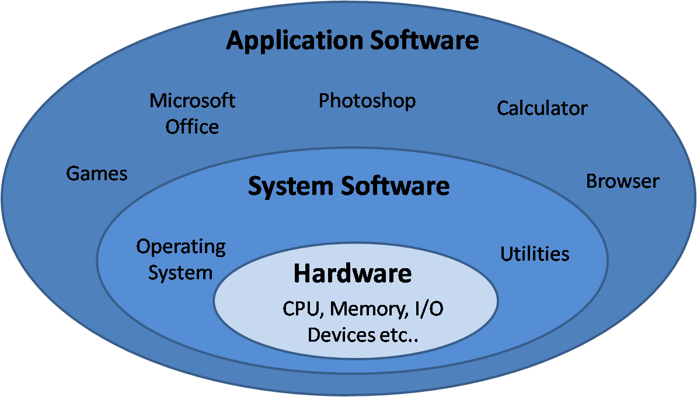
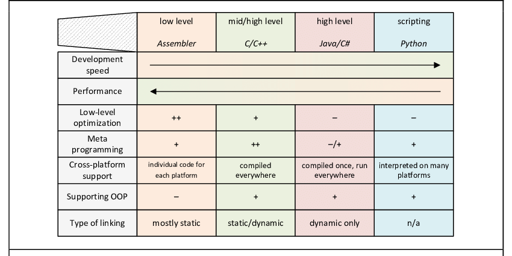
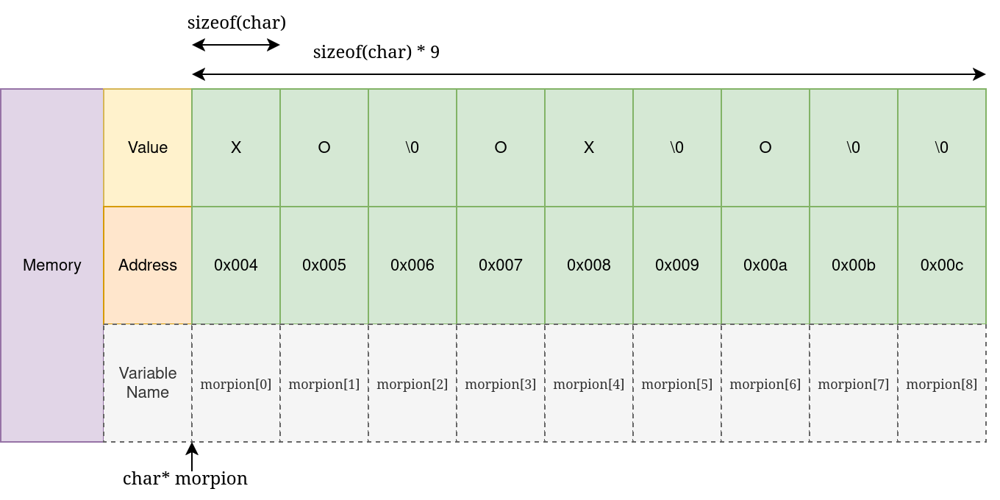
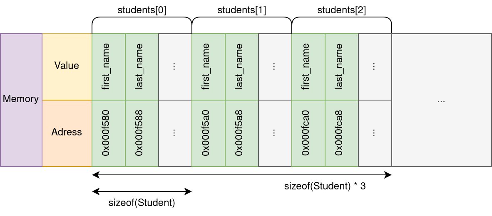
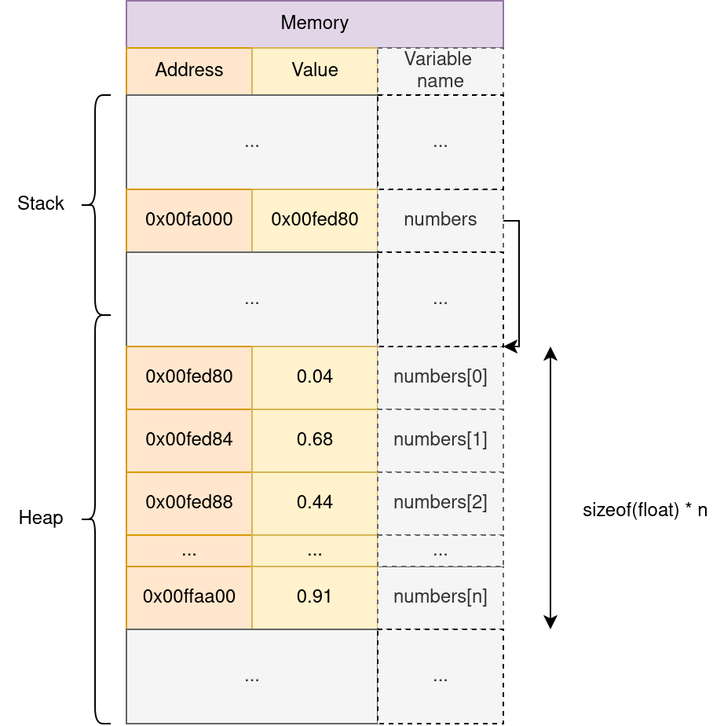
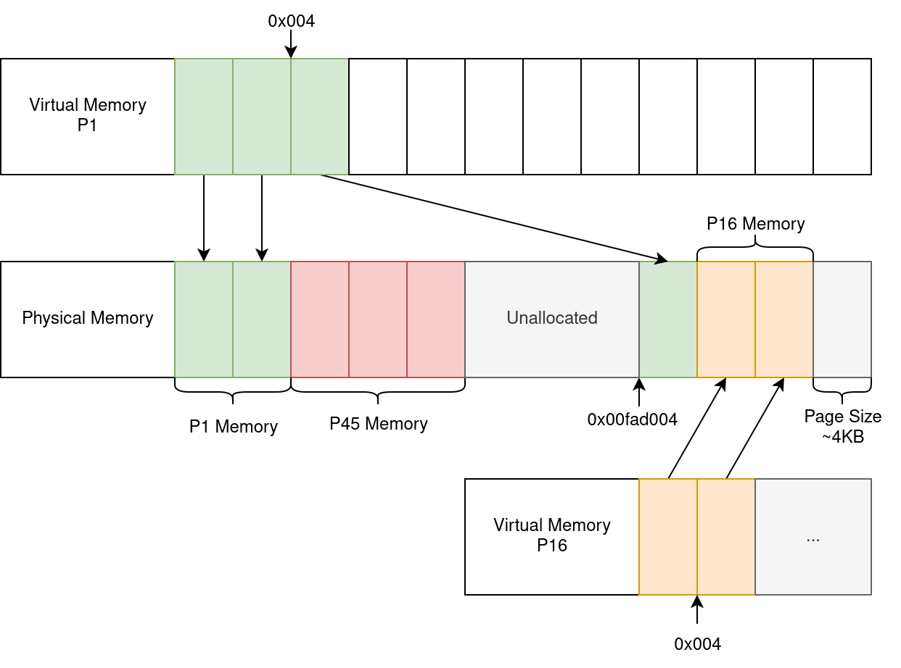
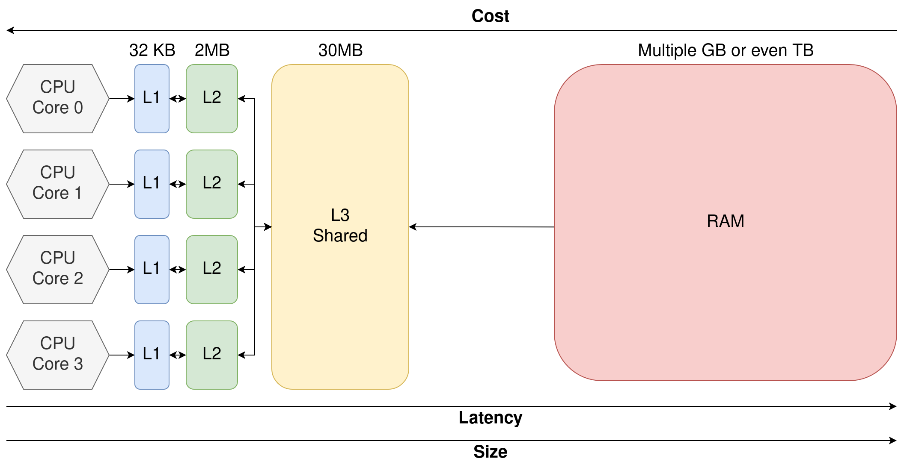
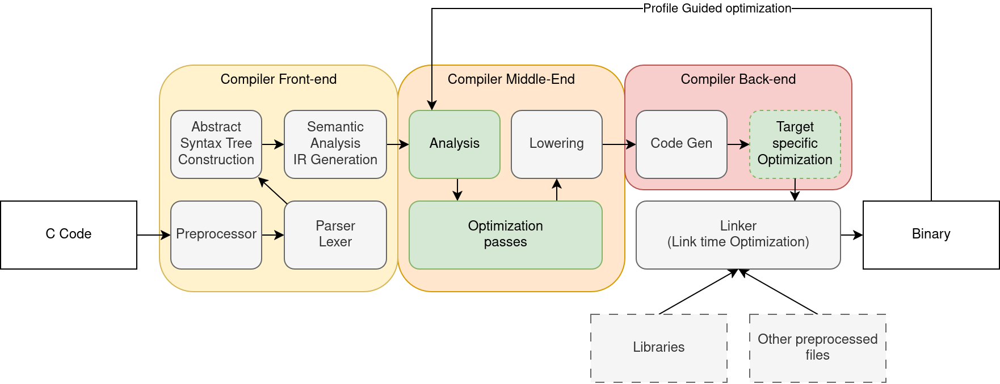
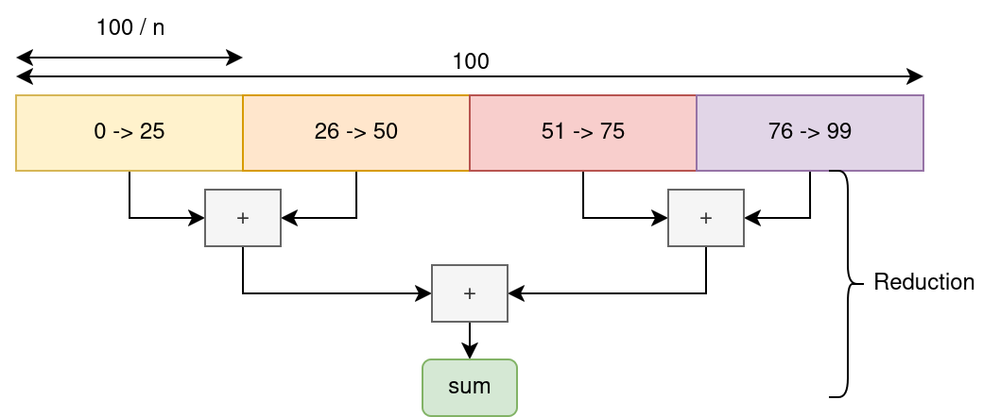
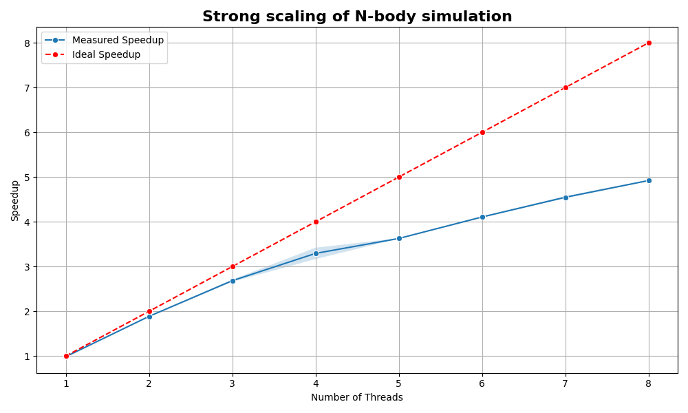

C for High Performance¶
Why C, C++, Python ?¶
Programming occurs at several abstraction levels from the hardware

Why C, C++, Python ?¶
- Layers close to metal are harder to program...
- But they offer maximum control and performance
- High-level abstraction maximize productivity...
- But have significant overhead, less control over performance
In practice; we often combine multiple languages
- C for performance critical sections, python for higher level APIs
Why C, C++, Python ?¶

C Programming - Operations and Typing¶
C is a strongly typed imperative language:
int main() {
int a = 5;
int b = 10;
int c = a + b;
float d = c / a;
float e = (float)c / a;
int f = a * a * a * a;
return 0;
}
main is the program entry point.
C Programming - Functions¶
#include <stdio.h> // For printf(...)
int sum_and_square(int a, int n) {
int tmp = a + n;
return tmp * tmp;
}
int main() {
int a = 5;
int b = 4;
int c = sum_and_square(a, b);
int d = sum_and_square(3, 9);
// Print the result to the console
printf("(5+4)**2: %d\n", c);
printf("(3+9)**2: %d\n", d);
return 0;
}
C Programming - Loops¶
Implementation C de \(\sum_{i=1}^{100}{i}\)
#include <stdio.h> // For printf(...)
int sum_range(const int start, const int end) {
int sum = 0;
// Consider start = 0; end = 100
// For i starting at 0; while i <= 100; increment i by one
for (int i = start; i <= end; i = i + 1) {
sum += i;
}
return sum;
}
int main() {
printf("Result: %d\n", sum_range(1, 100));
return 0;
}
const qualified variable cannot be modified. This may enable optimizations during compilation.
C Programming - Conditions¶
Numbers of multiple of 3 inside \([0, 99]\) (i.e. \(i \mod 3 = 0\))
void count_multiples_of_three() {
unsigned int count = 0;
// For i starting at 0; while i < 100; increment i by one
for (unsigned int i = 0; i < 100; i++) {
// if i % 3 (Remainder of the integer division) is equal to 0
if (i % 3 == 0) {
count++;
}
}
printf("Result: %d\n", count);
}
Note¶
Here we could also do for (unsigned int i = 0; i < 100; i += 3)
C Programming - Basic Pointers¶
c contains the address of a; so *c = *c + b write in a the sum of a and b.
| Adress | Value | Variable |
|---|---|---|
| 0x004 | 0 | a |
| 0x008 | 5 | b |
| 0x00c | 0x004 | c |
| ... | ... | ... |
C Programming - Arrays¶
int main() {
char morpion[9] = {'X', 'O', '\0',
'O', 'X', '\0',
'O', '\0', '\0'};
morpion[8] = 'X'; // The player clicked on the bottom-right cell !
}

C Programming - Structures¶
Structures are user-defined composite types:
typedef struct {
char* first_name;
char* last_name;
int age;
float mean_grade;
char gender;
} Student;
Student e1 = {"Dupont", "Pierre", 22, 13, 'm'};
Student e2 = {"Major", "Major", 22, 13.5, 'a'};
Student e3 = {"Martin", "Evelynne", 24, 14, 'f'};
if (e1.mean_grade > 10) {
printf("(%s %s) is a pretty good student !\n",
e1.first_name, e1.last_name);
}
C has no concept of class, object, or method !
C programming - Structures 2¶
void display_student(Student* s) {
// s->age is equivalent to (*s).age
printf("%s %s (%i): %f\n", s->first_name,
s->last_name, s->age,
s->mean_grade);
}
// We can have arrays of any types !
Student students[3] = {{"Dupont", "Pierre", 22, 13, 'm'}, ...};
for (int i = 0; i < 3; i++)
display_student(&students[i]);

C Programming - Trading Abstraction for performance¶
In C, we must manually take care of very low level concepts¶
- We care about data layout, memory addresses, pointers, etc.
- The language doesn't provide linked lists, dynamic arrays, dictionaries, etc.
- No basic algorithms like sorting
On the flip side, we can¶
- Manually lay out data to maximize efficiency
- Remove any abstractions and overhead to maximize performance
- Generate code that runs as close to the metal as possible
- Optimize our program for the hardware
C Programming - Trading Abstraction for performance (Example)¶
Consider the following python and C code:
unsigned long long sum = 0;
for (unsigned int i = 0; i < ub; i++){
sum += i;
}
printf("Sum of first %llu integers is: %llu\n", ub, sum);
Where ub is a very large number (100 Millions in this example). Which one is faster, and by how much ?
C Programming - Trading Abstraction for performance (Example)¶
Results:
Cversion: 0.024sPythonversion: 5.650s
That's a speedup of \(\times 235\).
We will see later in this course how this is possible.
Numpy and other libraries¶
Note that we could use numpy or the sum python function: but those are actually implemented in C !
Managing Memory¶
Managing Memory - Concept¶
In High-level languages¶
- We operate on abstracted data structures (lists, dictionaries, etc.)
- Memory is managed automatically (allocation, resizing, deallocation)
- We don't care about memory alignment, stack vs. heap, page size, Numa effects, etc.
In C¶
- We perform directly with primitive data and raw memory
- We are responsible for allocation, layout, and cleanup
- We can only request chunks of raw memory, and fill it however we choose
- This is critical for performance
This low level control is critical for performance; hence we must understand how memory works under the hood !
Managing Memory - Memory Types¶
We can distinguish two types of memory
- Memory automatically allocated by the compiler on the stack.
- Stores variables, functions arguments, etc.
- Fast but limited in size
- Memory that is (manually) dynamically allocated on the heap
- Must be allocated and freed by the developer !
The kernel (Linux / Windows) allocates memory pages and operates at a coarse grain level.
The standard library (libc) manipulates pages on a finer scale and provides memory to the user.
Managing Memory - Allocation¶
#include <time.h> // for time
#include <stdlib.h> // For malloc, srand, rand
int do_the_thing(int n) {
// We allocate n numbers
float* numbers = malloc(sizeof(float) * n);
// We seed the random number generator
srand(time(NULL));
// We generate nsamples random numbers
for (int i = 0; i < n; i++) {
numbers[i] = (float) rand() / RAND_MAX; // Generate a number in [0, 1]
}
... // Do something complicated here
free(numbers); // Release memory back to the kernel
return 0;
}
Managing Memory - Allocation¶

malloc returns a pointer to the beginning of the allocated memory range
Managing Memory - Deallocation¶
Memory is not infinite !
In Python (and Java, C#, etc.); memory is managed by the garbage collector (GC):
- The runtime tracks all memory allocations; and all reference(s)
- When a memory block is not referenced by the program; the GC will release the memory back to the kernel.
In C/C++, the user must deallocate memory using free(ptr).
Memory leak¶
If memory is not freed (memory leak) the computer can run out:
- The kernel can kill the program
- The OS can crash
- Other applications requesting memory can crash or fail
Virtual And Physical Memory - Problem¶
- How can the kernel guarantee that memory is always contiguous?
- Can I acess memory from another program and steal their data?
- How can multiple applications share the same memory?
- Some variables have hard-coded addresses!
- How to handle (Internal/External) fragmentation (Empty slot)?
Virtual And Physical Memory - Concept¶
We separate Physical Addresses (locations in memory) from Virtual Addresses (Logic locations) seen by each program !
- Physical memory is divided into small fixed-size blocks called pages (typically ~4KB).
- The CPU includes a Memory Management Unit (MMU) that translates virtual addresses into physical addresses.
- Each program is given its own isolated virtual address space.
- The kernel maintains a page table for each program that tells the MMU how to translate addresses.
The Illusion of contiguity¶
Each process believes it has acces to a large, contiguous block of memory; while it can be physically fragmented or shared.
Virtual And Physical Memory - Diagram¶

*Note that this is a simplified representation.
Memory Hierarchy¶
Which memory are we talking about ?

Note that GPU(s) also have their own separate memory !
Memory Hierarchy¶
- CPU computations are extremely fast, and memory access can be a bottleneck
- Registers have the lowest latency
- CPU caches (L1, L2, L3) act as fast buffers for memory
- DRAM (main memory) is much slower, but cheaper and larger
- Accessing DRAM causes significant delays compared to cache
To achieve high performance, we must maximize data reuse in registers or caches, and minimize DRAM access.
CPU Caches¶
Most CPU have 3 levels of cache
- L1d - First Level Cache (Very fast)
- L2 - Second Level Cache (Fast)
- L3 (Last Level Cache - LLC) (Larger but slower than L1/L2)
Some cache level are per-core (L1, often L2) whereas others are shared between multiple cores (L3).
Instruction Cache¶
The assembly instructions are stored in a separate (L1i) instruction cache
CPU Caches¶

We speak of Heterogeneous Memory Hierarchy: the same memory accesses can have different latency depending on where the data resides !
[Live example: LSTOPO]
CPU Caches - In practice¶
- The cache controller looks-up the data inside the CPU cache (L1 -> L2 -> L3)
- If available, data is sent to register for the ALU
- Else, a memory request is emitted
- This introduces latency and a bubble in the CPU pipeline
- When the memory request is resolved; execution resumes
- The results of \(a*b\) is written to cache, and eventually back to main memory later on.
CPU Caches - In practice¶
In practice:
- The CPU fetches entire cache line (Often 64 Bytes) at once (If float: \(64B / 4B = 16\) values at once)
- The CPU can prefetch data: it learns data access patterns and anticipates future memory access.
- The CPU can execute out-of-order; independent instructions are executed while the memory request is in flight.
Caches CPU - Strided Access¶
Consider two NBody 3D implementations:
Array Of Structure (AoS)
Structure Of Array (SoA)
// We allocate separate arrays for each components
float* x = malloc(sizeof(float) * N);
float* y = malloc(sizeof(float) * N);
float* z = malloc(sizeof(float) * N);
Caches CPU - Strided Access¶
We want to record the number of particles with \(x \leq 0.5\)
Array Of Structure (AoS)
Structure Of Array (SoA)
Which one is faster; and why ?
Which access pattern makes better use of cache lines ?
Caches CPU - Strided Access¶
Perf results summed across 100 runs:
| Time | # Instr | # L1 Loads | # L1 Miss | # LLC Loads | # LLC Miss | |
|---|---|---|---|---|---|---|
| AoS | ~1.93s | ~14 Billion | ~3.5 Billion | ~1 Million | ~400k | ~382k |
| SoA | ~1.75s | ~14 Billion | ~3.5 Billion | ~300k | ~24k | ~15k |
| # Cache references (LLC) | # Cache miss | |
|---|---|---|
| AoS | ~158 Million | ~151 Million |
| SoA | ~52 Million | ~35 Million |
With AoS more load fail in the L1, leading to LLC accesses.
Most LLC loads still results in misses, leading to DRAM access.
Compilation & Assembly¶
Compilation & Assembly - Introduction¶
C is a compiled language: we must translate the source code to assembly for the CPU
gcc ./main.c -o main (<flags>)
- Python is interpreted
- More flexible but significantly slower
- C# and Java are compiled to intermediary bytecode and then executed via a virtual machine (or JIT-ed)
- Balances performance and productivity
- C/C++/Rust are compiled to assembly code
- Poor portability, but no intermediary.
Compilation & Assembly - Simple Loop¶
main:
.LFB6:
pushq %rbp // We record the stack pointer
movq %rsp, %rbp
movl $0, -4(%rbp) // Initialize sum
movl $0, -8(%rbp) // Initialize i
jmp .L2
.L3:
movl -8(%rbp), %eax // Load sum to a register
addl %eax, -4(%rbp) // Add i and sum (from memory)
addl $1, -8(%rbp) // Add 1 to i (from memory)
.L2:
cmpl $99999, -8(%rbp) // Check if i < 100 000
jle .L3 // Jump Less Equal
movl $0, %eax // Set the return value of main
popq %rbp
ret // Return from main
gcc ./main.c -o main -OO
Compilation & Assembly¶
Assembly is as close to the metal we usually get, and is architecture dependant:
- Intel and AMD use the x86 Instruction Set
- x86 has multiple extensions (FMA, sse, avx, avx512, etc.)
- To maximize performance, we should compile our applications on each platform
- Our binaries are not portable
- But we can use dedicated instructions
- Other instructions set exists (ARM, Risc V, etc.)
Compilation & Assembly - Optimization passes¶
The compiler is not just a translator:
- The compiler can generate optimized instructions from our program
- Constant values can be propagated, unused values/code removed
- Operations can be reordered, inlined, vectorized using SIMD, etc.
- Many, many more optimizations
Those optimizations are enable through flags such as -O1, -O2, -O3 which are predefined sets of optimization passes.
The flag -march=native allows the compiler to target the current machine for compilation and use all the available ASM extensions.
Compilation & Assembly - Compiler Pipeline¶

There are several compilers with varying performance and features:
- GCC and Clang-LLVM (The classics)
- MSVC (Microsoft), mingw-LLVM, arm-clang (For ARM) and many, many others.
Makefile Basics - Introduction¶
Make is a scripting tool to automate complex compilation workflows. It works by defining rules inside Makefiles.
mainis the target (What we want to build)main.c my_library.c my_library.hare the dependencies: rule reruns if any change$(CC) -o $@ $< $(CFLAGS)is the recipe$@expands to the target name$^expands to all dependency
Makefile Basics - Phony rules¶
Makefiles expects that a rule main produces a file called main. However, not all rules produce files:
Here, make all will be an alias to build everything, while make clean is a custom rule to clean all build artifacts.
Makefile has many, many other functionalities, outside the scope of this course.
Makefile Basics - Usage¶
The typical projects looks something like:
make will look for a file in the cwd named Makefile or makefile.
You can directly call make all, make clean, etc.
Parallelism Basics¶
Parallelism Basics - Introduction¶
Compiler optimization is only one side of high peformance computing.
If you remember; we saw in LSTOPO that our CPU has many cores:
- Every core can perform computations independently of the other
- Multiple process (Google, vscode, firefox, excel) can run simultaneously on different cores.
- The kernel manages execution through thread scheduling and time-slicing
Main Thread¶
Every process has at least one "thread of execution", which is an ordered sequence of instructions executed by the CPU.
Parallelism Basics - Introduction¶
What if we could split our programs into multiple threads ?
- If we have 1 thread only one computation happens at a time
- If we have 2 threads, we can potentially double throughput !
In practice, there is some overhead, we must handle dependencies between instructions, etc.
Parallelism Basics - Types of parallelism¶
We consider three main types of parallelism
- Single Instruction Multiple Data (SIMD): also called Vectorization
- single instruction operates simultaneously on multiple data elements.
- Shared Memory: Multiple threads inside the same memory space
- Threads share a memory space, enabling fast communication and synchronization.
- Distributed Memory: Multiple processes
- Communications are slower, but this model enables scaling across multiple machines.
For this course, we will only focus on SIMD and Shared Memory parallelism.
Parallelism Basics - Shared Memory¶
Consider the following loop:
We can slice the iteration space in multiple chunks:

Parallelism Basics - Shared Memory¶
We split the program into multiple instruction sequences running in parallel.
- Every thread operates a sum on a subset of the data
- We synchronize every thread and combine the partial sums via a global reduction.
OpenMP is an HPC tool designed for scenarios like this !
It's a simple to use library/compiler pass to parallelize trivial loops.
Parallelism Basics- OpenMP¶
gcc ./main.c -fopenmp -O3 -march=native
This directive automatically distributes the loop iterations across all available CPU cores, performing a thread-safe reduction on sum.
Parallelism Basics - OpenMP details¶
OpenMP defines a set of clause which are operations followed by a set of modifiers.
#pragma omp: is the start of all OpenMP clausesparallel:enable the creations of multiple threadsfor: toggle the automatic slicing of following loopreduction(sum: +): toggles a reductions clause for sum using the+operation.
This code will be enough for most cases; but OpenMP allows for significantly more complex operations.
Parallelism Basics - Advanced OpenMP Example¶
float global_min = FLT_MAX;
int global_min_index = -1;
#pragma omp parallel
{
float min_value = FLT_MAX;
int min_index = -1;
#pragma omp for nowait schedule(dynamic)
for (int i = 0; i < N; i++) {
if (T[i] < min_value) {
min_value = T[i];
min_index = i;
}
}
#pragma omp critical
{
if (min_value < global_min) {
global_min = min_value;
global_min_index = min_index;
}
}
}
Naive NBody 3D Strong Scaling - Setup¶
We increase the number of threads while keeping the work size constant.
OMP_PLACES={0,2,4,6,8,10,12,14} OMP_PROC_BIND=True OMP_NUM_THREADS=8 ./nbody 10000
sudo cpupower frequency-set -g performance
5 Meta repetitions per run, 13th Gen Intel(R) Core(TM) i7-13850HX @5.30 GHz, 32KB/2MB/30MB:L1/L2/L3 15GB DDR5.
Naive NBody 3D Strong Scaling - Results¶

Speedup is limited by runtime overhead, concurrency, memory bandwidth, data size, etc.